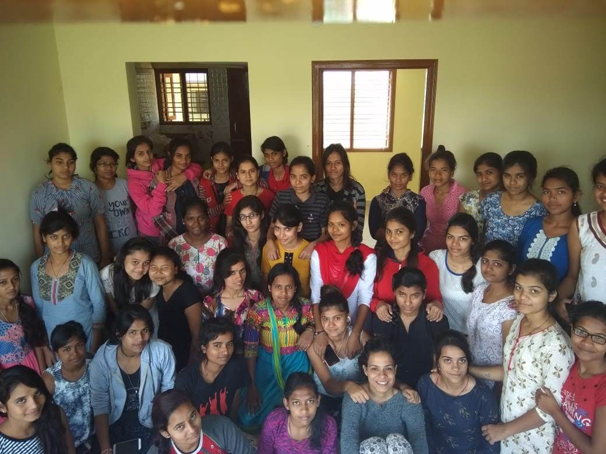

NavGurukul is to nurture the students for a career of their choice and equipping them with a strong practical understanding of how to take the change forward to more and more people. Students need to responsibly manage and govern the residential facility to ensure that there is a space for each and every student to use this opportunity to hone their leadership skills and attitude and learn to take charge of the situations students are able to own up and contribute to the various processes and realise their larger role in shaping their own experiences and learning the model is scalable to plug and play more NavGurukuls leading to more and more students to benefit from this There are many hiccups that come in the way of a smoothly running system. It needs people to take ownership and set things right. This constitution provides a framework to work in a structured manner - leading to growth of every member while efficiently tackling the problem that may arise on a day-to-day basis.
You can use this opportunity to understand and appreciate your own role to create a safe space that prospers learning and love amongst all. May this constitution and every effort that we make. NavGurukul's constitution adopts principles of the Swaraj and a rule by people, for the people. It is important that each and every member of the facility feels empowered by the constitution and the elected members act as facilitators rather than as power centers. To ensure that the power lies with all the members there are various safeguards like Right to Recall, but most importantly the right culture leads to the same. Hence, each member is encouraged to participate and take ownership.
